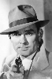

Country:United States, 65 minutes
Spoken languages:
Genres:Action, Crime, Mystery, Thriller
Director(s):John Rawlins
Writer(s):Eric Taylor, Robertson White
Video Codec:Unknown
Number: 1727


Certification:
Storyline:
A gang of criminals, which includes a piano player and an imposing former convict known as 'Gruesome', has found out about a scientist's secret formula for a gas that temporarily paralyzes anyone who breathes it. When Gruesome accidentally inhales some of the gas and passes out, the police think he is dead and take him to the morgue, where he later revives and escapes. This puzzling incident attracts the interest of Dick Tracy, and when the criminals later use the gas to rob a bank, Tracy realizes that he must devote his entire attention to stopping them.
Cast: 

Medium: Original DVD,
Comments: Part of: Mystery Classics - 50 Movie Pack
Loaned: No
Aspect ratio: Unknown